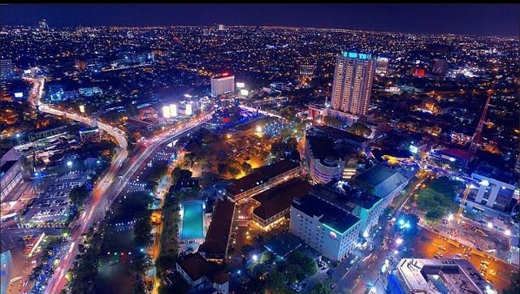
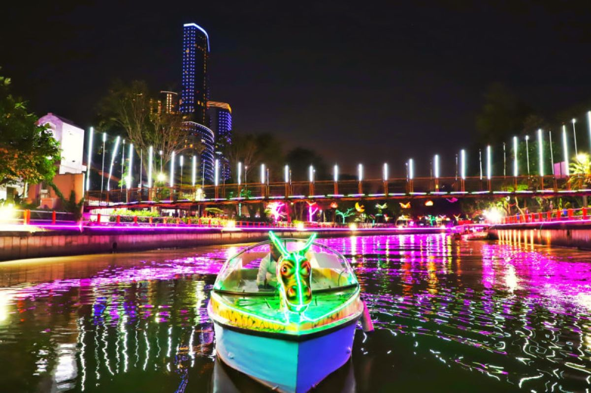

Sejarah

The historical story of Surabaya City is thick with heroic values. Since its inception,
Surabaya has a long story associated with heroic and the struggle of youth in the era
of Indonesia Independence. The term Surabaya consist of the word Sura (dare) and baya
(danger), which mean is interpreted as daring to face the danger that comes. One of the
values of this heroism manifested itself in the battle between Raden Wijaya and the Monggol
troops led by Kubilai Khan in 1293. The battle was so historic that the date (31 May)
was enshrined as the date of the founding city of Surabaya.
The heroism of the people of Surabaya is best illustrated in the battle of 10 November 1945.
Arek-Arek Suroboyo
, as the people of Surabaya were called, armed with sharpened bamboo
stick, bravely fought the allied troops who had sophisticated weaponry. Tens of thousands of
citizens died defending their motherland. This heroic event was later enshrined as Heroes' Day
commemoration. Thus making Surabaya labeled as The City of Heroes.
Geografis

Surabaya is the Capital City of East Java which known as the City of Heroes.
Surabaya is located in the North Coast area of East Java. Geograpichally, the
city of Surabaya is located downstream of a watershed Brantas River whuch empties
into the Madura Strait. Several major rivers originate from upstream it flows
across the city of Surabaya, namely Surabaya River, Mas River, Jagir River,
and Lamong River. As a downstream area, the City of Surabaya prone to flooding
during rainy season.
Tourist Attraction
As a Coastline City, Surabaya has several beautiful beach and tropical
destination. Then, known as the city of heroes, making Surabaya has many
historical places that can be visited.
Wisata Air Kalimas

Kalimas boat tour this route offers the nuances of lantern lights along the Submarine Monument route
to the Achievement Park Pier. You can enjoy photo spots at the Suroboyo Statue Fountain, Skate & BMX Park
and Floating Market. This tour includes an entrance ticket to the Submarine Monument. The entrance and
end point of this route is the Submarine Monument
Pantai Eksotis Kenjeran
Kenjeran Beach is divided into two beaches namely the Old Kenjeran Beach and the New Kenjeran Beach.
Later, this beach turned into the Kenjeran Beach Amusement Park complete with entertainment facilities for visitors.
Some of the various entertainments in it are amusement parks, beach views with the Suramadu bridge, as well as various food outlets.